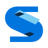
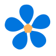
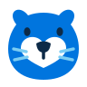
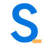
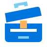
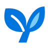

01
추상 · S 이니셜접힌 리본
한 줄의 리본을 접어, 해 보고 다듬는 Seta의 S를 만들었습니다.

밝은 배경 · #f6f5f4어두운 배경 · #191919
실제 크기확대 없이 표시
16px32px
16px32px
함께 쓰는 작은 도구와 직접 해 본 기록.
세타랩의 쓸모를 리본, 기록, 꽃, 캐릭터,
새, 활자, 작업대, 새싹으로 풀었습니다.
큰 형태 → 작은 크기 → 사이드바 순서로 비교하세요.
한 줄의 리본을 접어, 해 보고 다듬는 Seta의 S를 만들었습니다.

밝은 배경 · #f6f5f4펼친 두 장의 기록에 책갈피를 더해, 도구와 가이드를 함께 담았습니다.
서로 다른 다섯 조각이 모여, 작은 도구가 늘어나는 실험실을 그렸습니다.

밝은 배경 · #f6f5f4손으로 만지고 살펴보는 수달을, 친근한 세타랩의 얼굴로 만들었습니다.

밝은 배경 · #f6f5f4앞으로 향하는 새와 접힌 종이를 겹쳐, 바로 써 보는 가벼움을 담았습니다.
크게 쓴 S와 작은 밑줄을 짝지어, 이름을 앞세운 활자 로고를 만들었습니다.

밝은 배경 · #f6f5f4열린 뚜껑과 정돈된 서랍으로, 필요한 도구를 꺼내 쓰는 공간을 표현했습니다.

밝은 배경 · #f6f5f4작은 씨앗에서 두 잎이 펴지듯, 직접 한 실험이 쓸모로 자라는 모습을 담았습니다.

밝은 배경 · #f6f5f4S라는 단서와 접힌 면의 개성이 함께 보입니다. 작은 탭 아이콘과 차분한 도구 사이트에 두루 쓰기 쉬운 방향입니다.
개인 사이트의 얼굴을 만들고 싶을 때 어울립니다. 친근한 표정 덕분에 도구와 글을 만든 사람을 기억하는 데 도움이 됩니다.
파일 안내 · 각 카드의 SVG와 가로형 링크로 원본을 열 수 있습니다. 가로형의 -dark.svg 파일은 남색·어두운 배경용 흰 글자 버전입니다.
제작 기준 · 심볼은 모두 96×96 정사각형 SVG입니다. 16px·32px는 실제 표시 크기입니다. 06은 S 아이콘과 이름을 크게 쓴 가로 워드마크를 함께 사용합니다. 글자는 SUIT 800을 path로 변환했습니다.
다음 단계 · 방향을 고른 뒤 획·간격과 16px 전용 미세 조정을 진행할 수 있습니다. 이번 파일은 실제 사이트에 적용하지 않은 비교 시안입니다.